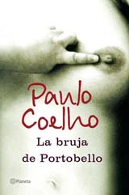
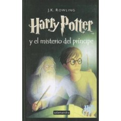

Lecturas de verano
Hoy 21 de marzo se termina el verano. Este fue un buen verano. Fue el verano en que más tiempo libre me dejó la facu y creo que fue uno de los que más disfruté. Entre las cosas que tuve oportunidad de hacer, estuvo leer.
En el post trato de reseñar/comentar/recordar algunos libros que leí este verano. Me refiero a libros de entretenimiento.
Título: La bruja de Portobello
Autor: Paulo Coelho
Origen: regalo de Ceci por mi cumple nº 22.
Señalador: una pluma blanca ;-)
Aprovecho este espacio para contarles algo: leí todos los libros de este autor brasileño, al menos todos los que son de difusión masiva (tiene un mar no-muy-publicados/que-no-lo-enorgullecen). ¿Y que encuentro de fascinante en este autor? Tal vez nada en especial, no consumo libros de auto ayuda (ni considero su obra en este género, aunque así lo hagan las librerías) pero desde que leí El Alquimista cuando estaba en la secundaria, un verano, acostado en cama me enamoré de su estilo. Me gustan las historias que cuenta. Al pastor Santiago le siguió (en mi lectura) le siguió un aprendiz de mago que tenía que recorrer el camino de Santiago para recuperar su espada. El Peregrino (diario de un mago) fue de todos el que más me gustó. El que menos fue Once minutos.
Título: Harry Potter y la Orden del Fenix
Autora: J.K. Rowling")
Origen: biblioteca de mi escuela secundaria.
Señalador: un pedacito de cartón.
Una vez había leído que los libros de Harry Poter eran cada vez más obscuros. Creo que no lo entendí hasta que leí este libro. La historia deja de ser el inocente libro 1 para chicos de 12 años (que yo.. ejem.. leí a los 21), los lectores crecen y así también lo hace Harry, lo que le permite enfrentar nuevos y mayores peligros a la vez que se revelan secretos y escalofriantes misterios.
De los 6 libros que leí, este fue el que más me gustó. El que le sigue en gusto fue el tercero (El prisionero de Azkaban). Según la autora, su favorito es el séptimo (aún no publicado) :)
Este libro ya me sirvió de inspiración para un pasado post: La orden del fenix.
Título: Un Lápiz en las manos de Dios (Vida de la Madre Teresa)
Autora: Franca Zambonini
Origen: Me lo prestó mi mamá.
Señalador: Un sobrecito que nos daban en el casamiento de mi amigo Adrián para saber dónde nos teníamos que sentar.
Lindo libro para leer, logra contar algo general (la vida de una persona) mediante relatos particulares, cosas concretas. Si lo consiguen les recomiendo leer un capítulo por día, por ejemplo a la mañana. Puede ayudarlos a vivir diferente ese día.
Título: El estilo HP (Cómo Bill Hewlett y yo creamos nuestra empresa)
Autor: David Packard
Origen: lo compré en un kiosco cuando lo vi, es parte de una colección de La Nación llamada Grandes Casos Empresariales.
Señalador: Un rectángulo de papel blanco :D Nada muy extraordinario puedo decir sobre este.
Sobre este también ya estuve contando en el blog: Estilo HP.
Título: El monstruo subatómico
Autor: Isaac Asimov
Origen: me lo prestó César.
Señalador: este sí tenía un señalador propiamente dicho, uno de esos de verdad.
Creo que su lectura me acercó más a el culto que hay con este autor. Es un ejemplo de su variada obra, ya que no solo escribió ciencia ficción. También, entre otras cosas, escribió libros de divulgación científica. Este libro es un ejemplo de ello. El libro está dividido en varias secciones: Física, Astronomía, Química, Tecnología y Cronología. Dentro de cada una va tocando distintos temas, casi siempre con un título gracioso o llamativo, una introducción al tema en la que deja ver fragmentos de su vida (esto hace las delicias de sus fans) y luego desarrolla el tema en cuestión, siempre haciendo mucho énfasis en los datos históricos de los mismos: ¿quién? ¿cuándo? ¿dónde?
Título: Si Harry Potter dirigiera General Electrics
Autor: Tom Morris (filósofo)
Origen: regalo de mi amigo Joel. También por mi cumple y a contra-pedido.
Señalador: Un almanaque. Bueno, de un lado es un almanaque y del otro hay una fotografía y sobre esta está escrito "La única lucha que se pierde es la que se abandona.".
El libro compara actitudes y valores de los habitantes de Howarts (la escuela dónde estudia Harry Potter, dirigida por Dumblendor) con los adecuados para dirigir una gran empresa. Por ejemplo, uno de los capítulos se llama Dumblendor, director ejecutivo :)
Es un libro para leer con atención, e incluso releer.
Título: Ud no me lo va a creer y otros cuentos
Autor: Roberto "El Negro" Fontanarrosa
Origen: tenía que cambiar un libro que me habían regalado para el cumple por que ya lo tenía. Después de mucho revolver en Mauro Yardín sobre la peatonal, me decidí por llevarme un libro de Fontanarrosa pagando una diferencia mínima. En una mesa había muchos libros de él que parecían ser parte de una colección, de una edición más bien. Como nunca leí nada suyo (ni siquiera Inidoro Pereyra) me sentía desarmado para hacer una buena elección, por lo que decidí preguntarle a un joven que allí trabajaba.
--¿Cuál será el mejor de estos libros de Fontanarrosa?-- indagué con aire taciturno.
--Mmm mirá..-- amagó a irse a preguntar, volvió, pensó. --Los libros de Fontanarrosa no son muy buenos.
Menos mal que no hice caso a la falta de paladar literario del vendedor! Me llevé Ud no me lo va a creer y otros cuentos y la verdad es que me encantó, un montón de cuentos muy divertidos con un estilo que me muy seductor, mis recomendados extraídos del índice del libro:
<li>Julito: una historia sobre la relatividad de lo bueno y lo malo en el seno de una familia humilde.</li> <li>Mi amigo Mickey: la relación Argentina - EEUU en un encuentro casual esperando un avión.</li> <li>Clase de modelo vivo: imperdible relato sobre el gusto en cultivar el arte de algunas personas.</li> <li>Una noche en lo de Nela y el Gordo: análisis pormenorizado de la vida conyugal a los ojos de 2 terceros (un tercero y un cuarto?).</li>
Nada más, mi lista original era más extensa pero de todos estos son los que más me divirtieron (Ojo, me falta leer algunos).
Señalador: No necesité usar, cada vez que agarraba el libro leía un cuento (o más) de cabo a rabo.
Bonus track: hace poco calló también en mis manos otro libro del mismo autor, El mundo ha vivido equivocado y otros cuentos.
Título: Harry Potter y el Principe Mestizo
Autora: J.K. Rowling
Origen: después de leer La Orden del Fenix no veía la hora de poder leer el siguiente libro de la historia. En febrero cuando la biblioteca de mi ecuela abrió la puertas lo saqué y me lo llevé a Santa Fe.
Señalador: uno largo (sobre sale del libro) que de un lado es turquesa y del otro negro. Está bueno que tenga dos colores, así cuando dejás el libro a mitad de un capítulo podés, a la vuelta, saber en cual de las 2 páginas tenés que seguir leyendo (previamente te tenés que haber puesto de acuerdo con vos mismo acerca de que lado del señalador iba a indicar eso).¿Leyeron alguno de estos libros? ¿Qué les parecieron? ¿Y a los autores?Nos seguimos leyendo y.. Feliz Otoño!
Comentarios
Comments powered by Disqus